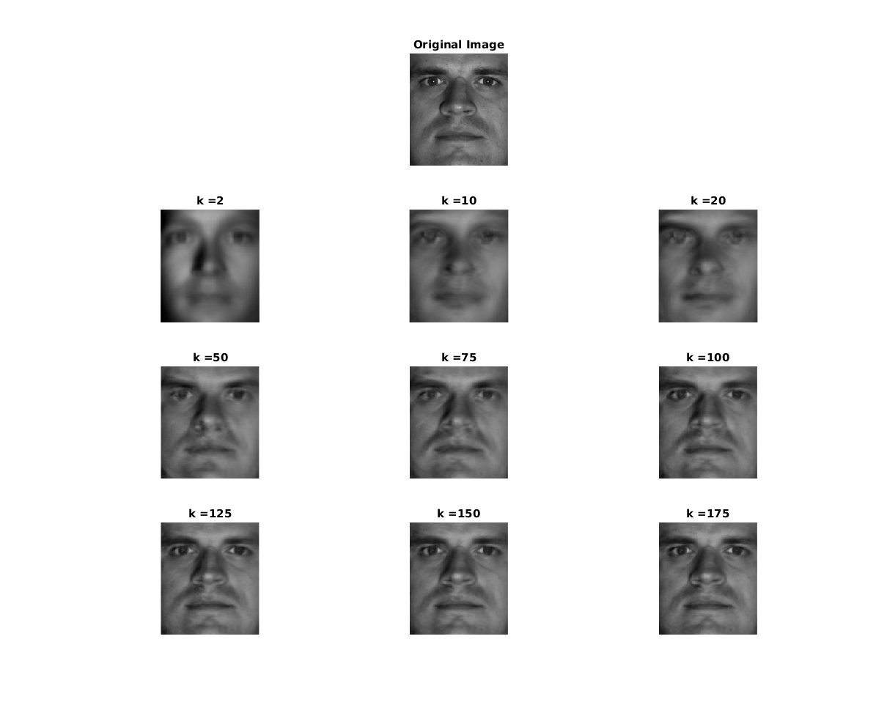

Q2. Image reconstruction using top k singular values
Bhavesh Thakkar, Dhanvi Sreenivasan and Dhruv Ilesh Shah
Contents
mySVDYaleReconstructor.m
function [ reconstructed_img ] = mySVDYaleReconstructor( input_img, U, k) input_img=input_img(:); %Unrolling the image into a 1D vector U = U(:,1:k); %Taking only the columns corresponding to the top k eigen values alpha=U'*input_img; %alpha is the eigen coefficient matrix of all the images in the training data reconstructed_img = U*alpha; reconstructed_img = reshape(reconstructed_img,192,168); end
tic;
input_img=imread('../images/yaleB04_P00A-005E-10.pgm'); %Input image chosen arbitarily input_img=im2double(input_img); U = mySVDYaleDatabasing(); %Gives us the orthogonal matrix U K = [2 10 20 50 75 100 125 150 175];
Plot
figure('Position', [100, 100, 1200, 1200]); subplot (4,3,2); imshow(input_img); title('Original Image'); for i=1:9 subplot(4,3,3+i); imshow(mySVDYaleReconstructor(input_img, U, K(i))); title(strcat('k = ', int2str(K(i)))); end
toc;
Elapsed time is 16.398381 seconds.